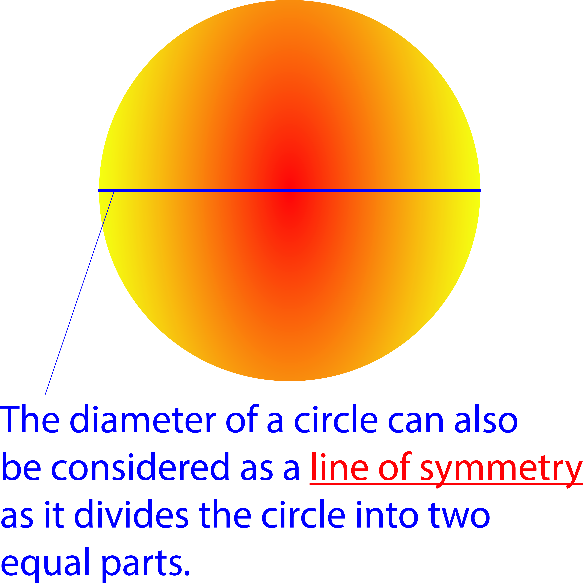

Lines of Symmetry
A line of symmetry is any line that divides objects or shapes in a plane into two equal parts. These two new objects or shapes will have the same shape and size, that is, they will look similar to each other. Hence, a line of symmetry is normally refered to as a mirror line.
For instance, when you look into a mirror, you see your image. In this case the mirror is acting as a line between you (the object) and the other person you see inside of the mirror (the image).
Examples of lines of symmetry are:
1. Perpendicular bisector.
2. The diameter of a circle.
3. The diagonal of a square.

When a line of symmetry can be drawn through a shape or an object, we say that the shape has reflectional symmetry or fold symmetry.
Consider the adinkra symbols below:

How many lines of symmetry can be drawn through each of the designs for the design to have a reflectional (or fold) symmetry?
Can you name some objects at home or in your classroom that have reflectional (or fold) symmetry?